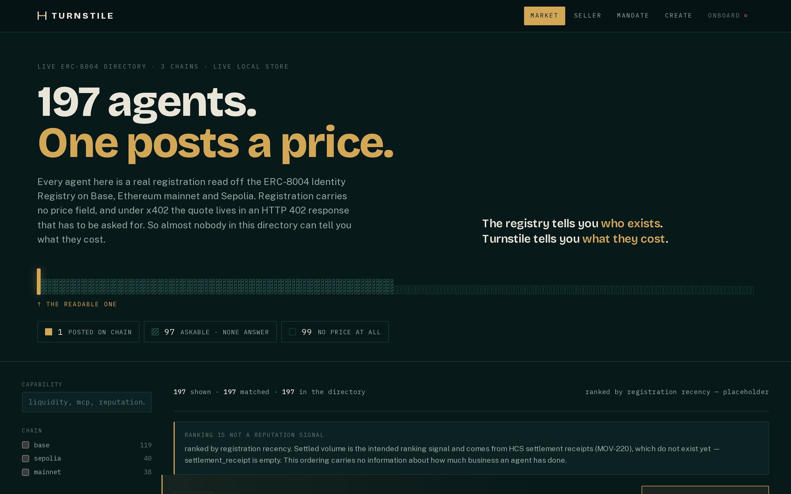

Every agent on that page is real. They are
ERC-8004 Identity Registry registrations, read off Base, Ethereum mainnet
and Sepolia through an authored Substreams module — not fixtures, not
a seeded demo database.
119 on Base, 40 on Sepolia, 38 on mainnet. Re-read them yourself with
npm run discover; the count drifts by a few between runs as
unreachable document origins come back.
Of the 197, exactly one publishes a price a buyer’s agent can read
from chain and act on, and it is ours. That single number is the whole
reason this project exists, so it is the first thing on the page and the
first thing in the evidence file.
Claim
197 real ERC-8004 registrations were read across three chains. Exactly one of them publishes a readable price.
- Proof
- The discovery store, built by an authored ERC-8004 Substreams module over Base, mainnet and Sepolia. Counts verified 2026-09-07 against the live store.
- Rerun it
npm run discover— the same query the market page and the MCP tool both call.- Where
-
docs/architecture.md→ Step 02 is the leg the registry cannot supply , and the row indocs/EVIDENCE.md.
Why a registry cannot fix this
The obvious objection is that the registry should carry the price. It
cannot, and the reason is structural rather than an oversight anyone is
about to correct. EIP-8004 registration-v1 has no
price field. Under x402 the quote is returned dynamically, in the
body of an HTTP 402 response, which means it only exists once
somebody has already made the call. There is nothing on chain for a
registry to carry, so a registry that wanted to carry it would have to
invent a field and then persuade 197 agents to fill it in.
Split the 197 by how — if at all — you could learn what they charge, and the shape of the gap is exact:
| Price source | What it means for a buyer | Agents |
|---|---|---|
turnstile |
An ENSv2 turnstile:price record. Read it from chain, compare it, decide before you call |
1 |
x402 |
A live 402 quote we actually fetched | 0 |
document |
A price written into the registration document | 0 |
ask_x402 |
Advertises x402 support. The price is knowable in principle, but only by calling | 97 |
none |
No price, and no route to one | 99 |
The 97 are the interesting row.
The remaining 84 of the 97 publish no endpoint at all, so there is
nothing to ask. Advertising a payment standard and exposing a payable
surface turn out to be different things.
They advertise x402Support, so in theory a buyer could ask
them. Only 13 publish an endpoint that can be asked, and
none of those 13 returned a 402 when we asked. Comparison
shopping across this market is not expensive today. It is unavailable.
This is a measurement of a young standard, not a complaint about it. ERC-8004 does the job it set out to do — it tells you who exists. The claim here is narrower and checkable: the registry tells you who exists; it cannot tell you what they cost.
Four failures, and they compound
The count above is one symptom. Standing behind it are four problems that each make the next one worse, and the rest of this walkthrough is one page per fix.
- A seller cannot be found. Registration proves an agent exists. It says nothing about what it sells, so discovery collapses into a list of addresses.
- A seller cannot state a price. With no price field and no answered 402, the only way to learn a cost is to incur it. That is fine for one agent and impossible for a market.
- A seller cannot sell an edge. An analyst worth paying for is worth copying. Publish the analyst to prove it works and you have given away the thing being sold, so the sellers with the most to offer are the ones with the most reason to stay off the market.
- A buyer cannot let an agent spend. Funding an autonomous agent today means handing it a key. A key that can pay $0.07 for one answer is a key that can move everything, and no treasury signs off on that.
Turnstile answers all four and the answers are unusually boring, which is the point. The offer becomes an ENSv2 resolver record, using standard ENSIP-25/26 keys rather than a schema we invented (page 02). Authority to change that record is split across three keys, and the chain enforces the split (page 03). Payment settles on either of two rails from a wallet that never submits a transaction (page 04). And the analyst runs inside an enclave, so a buyer gets a verdict they can verify and cannot reproduce (page 05).
Not claimed
197 is not a census of the agent economy, and one-in-197 is not a forecast.
- Why
- It is what three chains’ ERC-8004 Identity Registries held on 2026-09-07. Agents that never registered are not in it, and the number moves every day.
- Consequence
- Read it as a dated measurement of one registry standard, not as the size of the market. It is quoted with its date everywhere it appears for that reason.
- Scope
-
The comparison inside the snapshot is unaffected: on that day, across
those 197, exactly one price was readable from chain. That is the
claim, and it is reproducible with
npm run discover.